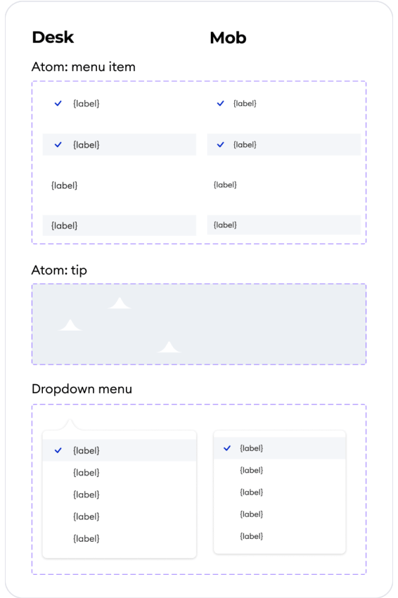
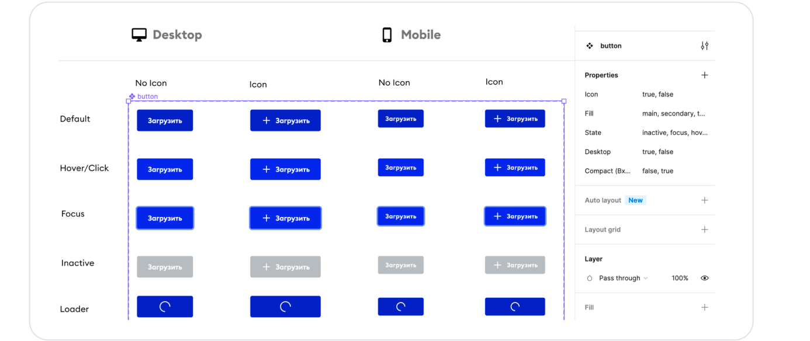

Создание дизайн-библиотеки
Предыстория:
В рамках проекта редизайна городского онлайн-портала, команда дизайнеров должна была решить, что делать с библиотекой. По сути, было два варианта: создать новую или повторно использовать старую.Команда:
Базовую переработку библиотеки делал я в паре с коллегой. На проекте были другие дизайнеры, но зачастую они занимались другими задачами. Позже в мои обязанности входил ревью добавляемых компонентов.
Повторно использовать существующую библиотеку или настроить новую?
Изначально была старая библиотека с двумя связанными документами, внутри которых было 700+ экранов. Была идея просто изменить стили и внешний вид компонентов, однако библиотека не была к этому готова из-за нескольких нюансов.
- Принципиально новый дизайн Во время редизайна платформы все макеты, элементы и опыт пользователя претерпели сильные изменения. (в отличии, например, от моего другого проекта, где мы специально делали редизайн так, чтобы сохранить HTML структуру и дизайн-систему)
- Сборка макетов Несмотря на то, что нам не пришлось бы собирать макеты с нуля, их все равно пришлось бы радикально корректировать, чтобы они выглядели должным образом, так что это не сэкономило бы много времени.
- Детачнутые компоненты Довольно распространенная практика в устаревших файлах поэтому даже если бы мы обновили компоненты, мы не смогли бы запушить изменения.
- Плохо собранные компоненты Многие компоненты были плохо собраны, были неадаптивны и имели лишние слои.
- Неиспользуемые компоненты Было много компонентов, сделанных «на всякий случай» (например вариации для темной темы, хотя темной темы на данный момент не было).
- Трудно ориентироваться в структуре Все компоненты и стили отображались на одной странице, поэтому было сложно найти то, что нужно. Мало того, компоненты не были сгруппированы в варианты (на тот момент эта функция была новинкой).

Окончательное решение
Ввиду всех этих проблем, мы решили создать новую библиотеку, поскольку перепроектирование старых компонентов заняло столько же времени (или даже больше) чем создание новых, с учетом проблем, которые были в устаревшей библиотеке. Это был шанс начать все заново и избежать предыдущих ошибок, продолжая при этом использовать передовой опыт.Исследование библиотеки дизайна
Как только было принято решение о создании новой библиотеки, мы начали наше исследование с бенчмаркинга. Я просмотрел более 20 различных дизайн-систем и библиотек, основные аспекты, которые мы хотели бы получить, это:- Структура файла и страниц, как сгруппированы компоненты.
- Как собираются компоненты.
- Как компоненты раскладываются с точки зрения атомарного подхода.
Мы также взяли интервью у некоторых других дизайнеров в нашей компании, которые имели дело с обширными библиотеками проектов. Они не только поделились некоторыми полезными знаниями с точки зрения структурирования, но и с точки зрения полезных инструментов и приемов.
Структура дизайн-библиотеки
Мы точно знали, что вариант со всеми компонентами на одной странице нам не подходит, так как по нему сложно ориентироваться, поэтому решили использовать разные страницы. Встал вопрос выбора группировки компонентов.
Перебрав множество дизайн-систем, остановились на структуре с группировкой по типам: баннеры, карточки, кнопки и т.д.
Но группировать нужно было не только компоненты, у нас были так же стили, дизайн-токены и гайдлайны. Так появилось два основных раздела нашей библиотеки: Foundations и Components.
Мы также решили помечать страницы, чтобы показать статус готовности. Если компонент выполнен, он помечается зеленым цветом, если он в работе и не доделан — желтым.


Атомный дизайн
Подход атомарного проектирования использовался в устаревшей библиотеке, но в новой мы подняли его на новый уровень. В сочетании с вариантами наша библиотека стала очень гибкой. Теперь мы смогли разработать такие организмы как фильтрующие панели, где самый маленький атом был чекбоксом.
Изменения рабочего процесса
Рефакторинг библиотеки не был бы столь эффективным без изменения рабочего процесса. Вот некоторые изменения, которые облегчили жизнь дизайнерам.- Эволюционное развитие. Чтобы не тратить время на компоненты, которые могут никогда не использоваться, мы решили развивать нашу библиотеку эволюционно, и создавать в конкретный момент времени только те компоненты, которые нужны.
- Контроль качества компонента. Существует страница под названием «To Review», где дизайнер размещает новый компонент, который следует добавить в библиотеку. Я, как ответственный за библиотеку и ревью, проверял, хорошо ли собран компонент, имеет ли необходимые состояния и описания.
- Без детачей, строгая политика использовать только компоненты. На заключительном этапе проверки проекта мы проверяли, что используются компоненты из библиотеки, в противном случае недостающие компоненты добавлялись в библиотеку.
- Спецификации. Усовершенствованные практики со спецификациями для дизайнеров и разработчиков.
Пример рефакторинга: Компонент кнопки ДО
- Ненужные состояния, такие как «темная тема».
- Плохая сборка: бесполезные слои и отсутствие отзывчивости.
- Отсутствие вариантов, набор компонентов с длинным названием.

Пример рефакторинга: Компонент кнопки ПОСЛЕ
- Только необходимые состояния.
- Лаконичная и отзывчивая сборка.
- Сгруппированы по вариантам.

Процесс по добавлению компонентов и ревью
Новые сервисы и экраны делались большим количеством дизайнеров из разных пулов. Вследствие этого могли появляться следующие проблемы:- Появление дублей компонентов. Иногда дизайнер может создать новый компонент, хотя может уже существовать подобный, и логичнее добавить ему новое состояние.
- Нейминг нового компонента может быть подобран неудачно.
- Компонент может быть собран неправильно, содержать пустые слои или слои с неправильным неймингом, быть неадаптивным и содержать не все состояния.
- Компонент может быть собран неправильно, содержать пустые слои или слои с неправильным неймингом, быть неадаптивным и содержать не все состояния.
- Компонент может быть размещен в библиотеке так, что его может быть трудно найти.
Результаты
- Правильная сборка компонентов значительно ускоряет работу по проектированию. Дизайнерам не нужно детачить компоненты или изобретать колесо, поскольку компоненты адаптивны и ведут себя в макетах так, как ожидается.
- Варианты — это огромный плюс, так как дизайнерам не нужно просматривать всю библиотеку, чтобы найти то, что необходимо.
- Новая структура библиотеки упростила навигацию. Стало не только легче найти подходящие компоненты для макетов, но и минимизировать ошибку создания дубликатов компонентов.
- Избавление от ненужных слоев и состояний ускорило работу в Figma, так как файлы стали занимать меньше места.
- Разработчики оценили новую библиотеку. Они отметили удобство использования, качество описания гайдов, а так же все состояния компонентов. Пусть у нас не было полноценной дизайн-системы, однако разработчикам стало удобнее работать с макетами, сократилось время рефаймента и коммуникаций на тему состояний, в сравнении с прошлой версией библиотеки.
- Дизайн-библиотека предполагала редполитику в отношении статей и мероприятий, что способствовало подготовке правильно оформленных статей контент-менеджерами.
Переработка дизайн-системы была сделана в рамках редизайна городского онлайн-портала.